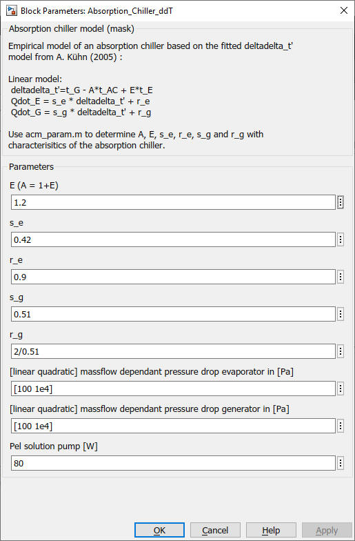

Absorption Chiller
ddT
Absorption Chiller
ddTPath: CARNOT/New Blocks
Absorption Chiller
ddT
Path: CARNOT/New Blocks
Purpose
This block calculates the capacities and cop of the absorption chiller with the
delta-delta-T model.
Description
Empirical model of an absorption chiller based on the fitted deltadelta_t' model from A. Kühn (2005) :
Linear model:
deltadelta_t'=t_G - A*t_AC + E*t_E
Qdot_E = s_e * deltadelta_t' + r_e
Qdot_G = s_g * deltadelta_t' + r_g
Use acm_param.m to determine A, E, s_e, r_e, s_g and r_g with characterisitics of the absorption chiller.
Inputs:
Outputs:
Parameters and Dialog Box

Characteristics
Direct Feedthrough Yes
Sample time Inherited from driving block
Vectorized No